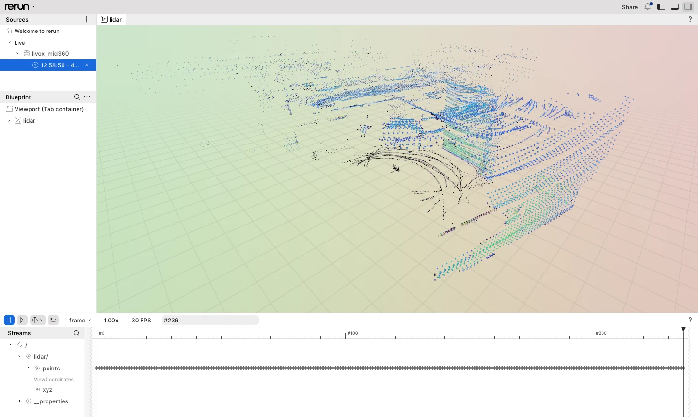
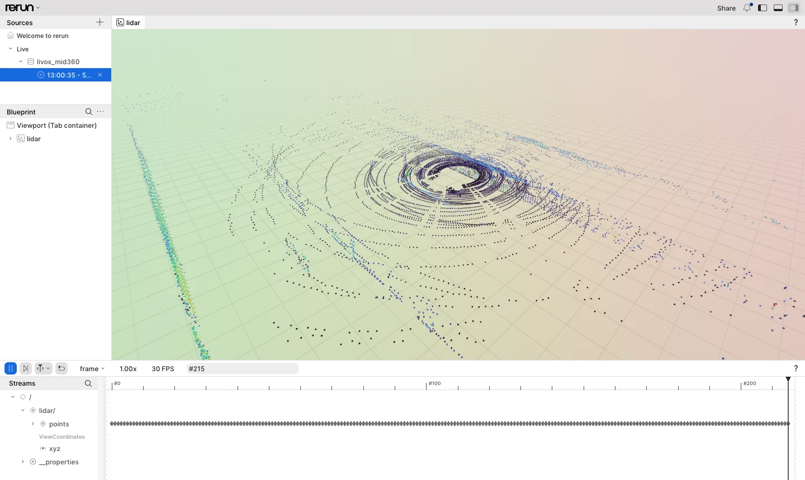

lvx2 record / replay¶
Issue #35 adds an lvx2 codec to the library (include/livox/mid360/lvx2.hpp) and a small
CLI (livox-mid360-cli, tools/cli/) that records the raw point-cloud packet stream of one
Mid-360 to a .lvx2 file and replays such a file through the same frame assembly the
Device uses. Design decisions are recorded on issue #35; the items that still need a real
Livox Viewer 2 are listed on #108.
File layout¶
Reference: "LVX2 Specifications" (Livox, 2023.06 v1.0, on the downloads center). All integers are little-endian, structures are packed. Livox-SDK2 and livox_ros_driver2 contain no lvx2 code; the layout below is taken from the specification only.
| Block | Size | Fields |
|---|---|---|
| Public header | 24 | char[16] signature "livox_tech" + zeros, u8[4] version {2,0,0,0}, u32 magic 0xAC0EA767 |
| Private header | 5 | u32 frame_duration (ms, 50), u8 device_count |
| Device info × N | 63 each | char[16] lidar_sn, char[16] hub_sn, u32 lidar_id, u8 lidar_type (reserved), u8 device_type (9 = Mid-360, 10 = HAP), u8 extrinsic_enable, f32 roll, pitch, yaw (deg), f32 x, y, z (m) |
| Frame header | 24 | u64 current_offset, u64 next_offset, u64 frame_index; packages follow back-to-back until next_offset |
| Package header | 27 | u8 version (0), u32 lidar_id, u8 lidar_type (reserved), u8 timestamp_type, u64 timestamp (ns), u16 udp_counter, u8 data_type, u32 length (point bytes), u8 frame_counter (reserved), u8[4] reserved |
| Points | length |
identical to the UDP payload: type 1 = 14 B/pt (i32 x, y, z mm, u8 reflectivity, u8 tag), type 2 = 8 B/pt (i16 x, y, z cm, u8, u8) |
Only data types 1 and 2 are valid in a file: there is no IMU package and no spherical package.
What the writer puts in¶
| Field | Value |
|---|---|
lidar_sn |
serial number from discovery |
hub_sn |
zeros (no hub) |
lidar_id |
SDK2 "handle": the four IP bytes as one u32 in network order (192.168.1.10 → 0x0A01A8C0) |
lidar_type |
0 |
device_type |
9 |
| extrinsic | key 0x0012 (install attitude) when readable, mm converted to m, extrinsic_enable = 1; otherwise zeros and 0 |
| frames | 50 ms of recording time each, counted from the first package; a package past the open frame flushes it (#173). Each device's timestamp joins the recording's time line at its first package, so LiDARs without time synchronisation share the frames. A clock jump of more than 1 s rejoins it the same way, and a late (reordered) package goes into the open frame |
package version |
0 |
timestamp_type |
the packet's time_type |
frame_counter |
the packet's frame_cnt (the spec marks the field reserved; the sample files have 0) |
| spherical packets (type 3) | converted to type 1 (mm, rounded) |
| IMU packets | not written; Lvx2Writer::write returns false and stats().ignored counts them |
The reader validates the signature, magic and major version (2) and the frame chain
(current_offset must equal the file position, next_offset must be past the header). It
does not validate device_type, lidar_type, frame_duration or the extrinsic. A file cut
mid-frame (e.g. a recording that was killed) yields every complete package and then sets
truncated().
Lvx2Writer::open takes frame_duration_ms, 50 by default. The specification fixes the field
at 50 for version 2.0.0.0. The writer accepts other values for other frame lengths and still
writes version 2.0.0.0, so other readers, Livox Viewer 2 among them, may not accept such a
file (#174).
Unverified against Livox Viewer 2¶
The simulator is the only device this has been recorded from. Livox's sample files (next section) answer some of the questions about files written by Viewer 2, but none about what Viewer 2 accepts. Tracked on #108:
- whether Viewer 2 requires
lidar_idto be the SDK2 handle (IP asu32) or accepts any value. The sample files do use the IP; - meaning of
lidar_type(the spec calls it reserved in the device info and the package header). The sample files have 247 in the device info and 8 in every package header, where the writer puts 0; - whether Viewer 2 requires a particular frame cutting. Its own files start a frame about every 50 ms from the recording's start, with the packages of every device in it, and the writer does the same (#173);
- whether files without IMU packages open. The sample files have none either;
- whether Viewer 2 follows the spec's extrinsic units (degrees, metres), and the sign of
extrinsic_enable. Two of the Outdoor sample's translations only make sense in centimetres (see below); - whether Viewer 2 accepts a non-zero
frame_counter, which the spec marks reserved and the writer fills withframe_cnt; - opening and replaying a file recorded by
livox-mid360-cli recordin Viewer 2. The other direction works:livox-mid360-cli replayreads the sample files.
Livox sample files¶
The Mid-360 downloads page has two recordings,
"Point Cloud Data - Indoor" and "- Outdoor". Both replay with livox-mid360-cli replay
(#164):
| File | Size | Devices | Length | Replay with --frame-mode window |
|---|---|---|---|---|
Indoor_sampledata.lvx2 |
223 MB | 1 | 78 s | 777 frames of 20 064 points (the last one partial), 0 dropped |
Outdoor_sampledata.lvx2 |
597 MB | 3 | 70 s | per device: 695 frames of 20 064 points (the last one partial), 0 dropped |
livox-mid360-cli replay Indoor_sampledata.lvx2 --frame-mode window
livox-mid360-cli replay Outdoor_sampledata.lvx2 --frame-mode window
In livox-mid360-rerun, one frame of each file looks like this. For Outdoor, one
of its three LiDARs is shown, picked with --lidar-id:
livox-mid360-rerun play Indoor_sampledata.lvx2
livox-mid360-rerun play Outdoor_sampledata.lvx2 --lidar-id 2080483520


What they contain:
| Field | Value |
|---|---|
frame_duration |
50 |
lidar_sn |
47MDK9DF710030 (both files), 47MDK9DF710195, 47MDK9DF710124 |
hub_sn |
not zeros: 16 bytes that look uninitialised, different per file |
lidar_id |
the IP as u32: 738306240 = 192.168.1.44, 3271665856 = 192.168.1.195, 2080483520 = 192.168.1.124 |
lidar_type |
247 in the device info, 8 in every package header (reserved in both) |
device_type |
9 |
| extrinsic | extrinsic_enable 1. Indoor: all zeros. Outdoor: roll, pitch, yaw, x, y, z = (-0.91, 0.41, 0.24, 0, 0, 0.8), (0.84, -181.23, -92.12, -36.4, 27.9, 80.1) and (-0.42, -178.55, 88.33, -37.7, -30.4, 82.1). The spec gives metres, which puts the last two LiDARs 80 m up; read as centimetres they are at (-0.364, 0.279, 0.801) m and (-0.377, -0.304, 0.821) m, level with the first one's 0.8 m |
| frames | 50 ms from the recording's start, not absolute bins; in Outdoor one frame holds the packages of all three devices |
package timestamp_type |
0 (no synchronisation); in Outdoor one LiDAR's clock is 2.66 s ahead of the other two |
package data_type |
1, 96 points (1344 bytes) per package, no udp_counter gaps |
package frame_counter |
0 in every package (a reserved field in the spec) |
Two consequences for a replay:
frame_counternever changes, so the default--frame-mode counterfalls back to the time window after2 × window(see "Frame counter mode" in api.md). The first frame then covers 200 ms (40 032 points, 776 frames in Indoor). With--frame-mode windowevery frame covers 100 ms. The spec marksframe_counterreserved, so other Viewer 2 recordings are likely the same, and the 0 says nothing about theframe_cntthe firmware sends (#11).- The Outdoor file holds three LiDARs. A replay plays all three in one run, each through its
own frame assembler and paced by its own clock, so the 2.66 s skew does not stall the other
two (#169).
--lidar-idplays one of them.
Library API¶
#include "livox/mid360/lvx2.hpp"
Lvx2DeviceInfo info{.lidar_sn = sn, .lidar_id = id};
Lvx2Writer writer;
writer.open("capture.lvx2", std::span(&info, 1));
device.on_packet([&](const DataPacketView & p, const ReceiveInfo &) { (void)writer.write(0, p); });
// ... later
writer.close();
Lvx2Reader reader;
reader.open("capture.lvx2");
while (auto p = reader.next_packet(); p && *p) { // nullopt = end of file
DataPacketView view = (*p)->to_data_packet_view(); // dot_num from the length, no CRC
}
Lvx2Player player({.frame_policy = {}, .rate = 1.0, .loop = false});
player.open("capture.lvx2");
player.on_device_frame([](const Lvx2DeviceInfo & d, Frame && f) {
/* same Frame as Device::on_frame, of the device d, in the LiDAR's own coordinates */
if (d.extrinsic_enable) { // not applied by the player; check the values first
const auto mm = [](float m) { return static_cast<std::int32_t>(std::lround(m * 1000)); };
const InstallAttitude a{d.roll_deg, d.pitch_deg, d.yaw_deg, mm(d.x_m), mm(d.y_m), mm(d.z_m)};
livox::mid360::apply(extrinsic_from(a), f);
}
});
// Lvx2PlayStats{packets, frames, points, dropped_packets, loops, unlisted_packets, devices}
auto stats = player.run(stop_token);
Lvx2Playerfeeds the recorded timestamps as they are (TimestampPolicy::kLidar); frames are closed byLvx2PlayOptions::frame_policy, not by the file's 50 ms frames.- The points of one package share one time. A package header has no
time_interval, soLvx2Packet::to_data_packet_view()sets it to 0, and every point of the package gets the package'soffset_ns. In a live frame, the points are spread over the time that the packet covers (protocol_notes.md). This is a limit of the format (#174). - The file's extrinsic is not applied. Frames are in the LiDAR's own coordinates, also with
extrinsic_enable= 1, where the specification says that points "should be computed with extrinsic parameters" (#174). To apply it, build anInstallAttitudefrom the device info (metres to millimetres) and callapply(extrinsic_from(...), frame), as in the example above. The reader does not check the values, and the Outdoor sample's translations look like centimetres (see "Livox sample files").apply()also moves the no-return points at (0, 0, 0) to the translation. - Every device of the file is played, each through its own frame assembler, so a frame never
mixes devices (#169). A
package goes to the device-info entry with its
lidar_id. A file with one device (or none) plays every package as that device, whatever itslidar_id. With several devices, packages whoselidar_idis not listed are skipped and counted inunlisted_packets. on_device_framegets each frame with its device.on_framegets the frames without it, so when several devices are played,run()refuses anon_framewithout anon_device_frame(kInvalidArgument, #163).on_packetgets the packages of every played device.lidar_idplays one LiDAR of the file.open()fails withkInvalidArgumentwhen it is not in the list; thedetailnames the file'slidar_ids.Lvx2PlayStats::deviceshas the packets, frames, points and drops of each played device; the other fields are their sums.rateis relative to the recorded timestamps (1.0 = real time, 0 = as fast as possible). Each device is paced by its own timestamps, because LiDARs without time synchronisation count from their own boot. A backward timestamp jump does not wait.- With
loop, the file is reopened and the frame assemblers reset after each pass; the partial frames are flushed at the end of every pass.Frame::indexis not reset: it starts at 0 for eachrun()and device, and keeps counting across passes (#149). - Errors are
std::expected<_, Lvx2Error>withkIo(+errno_value),kInvalidArgument,kUnsupportedDataTypeandkBadFile(+detail).
CLI¶
Built with LIVOX_MID360_BUILD_TOOLS (on by default when the project is top level) and
installed to bin/.
livox-mid360-cli record --out capture.lvx2 --lidar-ip 192.168.1.10 --host-ip 192.168.1.5 --duration 30
livox-mid360-cli replay capture.lvx2 [--rate 1.0] [--loop] [--frame-mode counter|window] [--window-ms 100] [--lidar-id N] [--quiet]
livox-mid360-cli --version
record discovers the LiDAR (--sn picks one when several answer), opens it, reads the
install attitude, calls start_sampling and writes every packet from on_packet. It
refuses to overwrite an existing file unless --force is given, prints
packets=N frames=M bytes=B once per second on stderr and stops after --duration seconds
or on SIGINT. Exit codes: 0 ok, 1 usage, 2 setup / I/O failure, 3 no packet recorded.
replay prints the file's devices (device sn=... lidar_id=...) on stderr, one line per frame
(frame N points=P t=... dropped=D) on stdout, unless --quiet, and a summary line
(packets= frames= points= dropped= loops=) at the end. SIGINT ends a --loop run. The
extrinsic=on|off of a device line is the file's extrinsic_enable. replay does not apply
the extrinsic; livox-mid360-rerun play --extrinsic does.
A file with several devices plays all of them. Each frame line then names its device
(frame N lidar_id=I points=..., with N counted per device), and one line per device
(lidar_id=I packets= frames= points= dropped=) comes before the summary. The summary adds
unlisted=U when packages had a lidar_id that the file does not list. --lidar-id plays
one device; an id that is not listed makes replay name the listed ones and exit with 2.
For Outdoor_sampledata.lvx2:
lidar_id=738306240 packets=145052 frames=695 points=13924992 dropped=0
lidar_id=3271665856 packets=145051 frames=695 points=13924896 dropped=0
lidar_id=2080483520 packets=145052 frames=695 points=13924992 dropped=0
packets=435155 frames=2085 points=41774880 dropped=0 loops=1
Against the simulator:
python3 tools/livox_mid360_sim.py --bind 127.0.0.1 &
build/tools/cli/livox-mid360-cli record --out /tmp/sim.lvx2 --lidar-ip 127.0.0.1 --host-ip 127.0.0.1 --duration 3
build/tools/cli/livox-mid360-cli replay /tmp/sim.lvx2 --rate 0
The ctest cli_record_replay does exactly that (2 s) and checks that the replayed packet
count equals the recorded one and the frame count matches the file's frames within two.
Tests¶
tests/test_lvx2.cpp: writer → reader round trip (types 1 and 2, spherical conversion, 50 ms splitting, IMU ignored), the writer's frames with unsynchronised devices, a late device, a reordered package and a clock jump (#173), the committed fixturetests/data/mini.lvx2(written by an independent Pythonstruct.packscript, not byLvx2Writer), truncated and corrupt files, and the player (frames, every device through its own assembler,lidar_idfilter, loop + stop token, pacing per device).cli_record_replay: the golden run against the simulator described above.